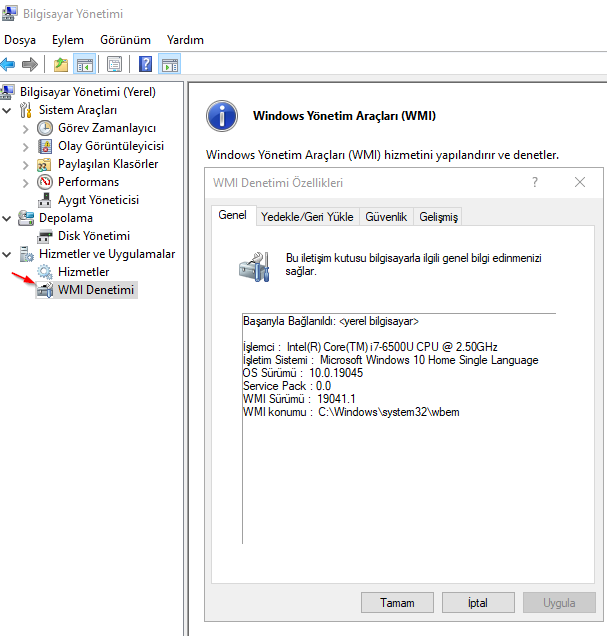

Windows Managment ınstrumention
Kısa yolu WMı amacı ise başka bir makinenin uzaktan bağlanarak onunla iligli bazı işlmeleri yapmamızı sağlar.
Başlangıç>Bigisayar yönetimi
bu yolu takip ederek
WMı
'a erişebilirsin.
